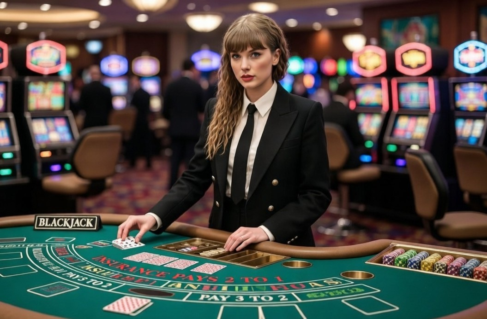
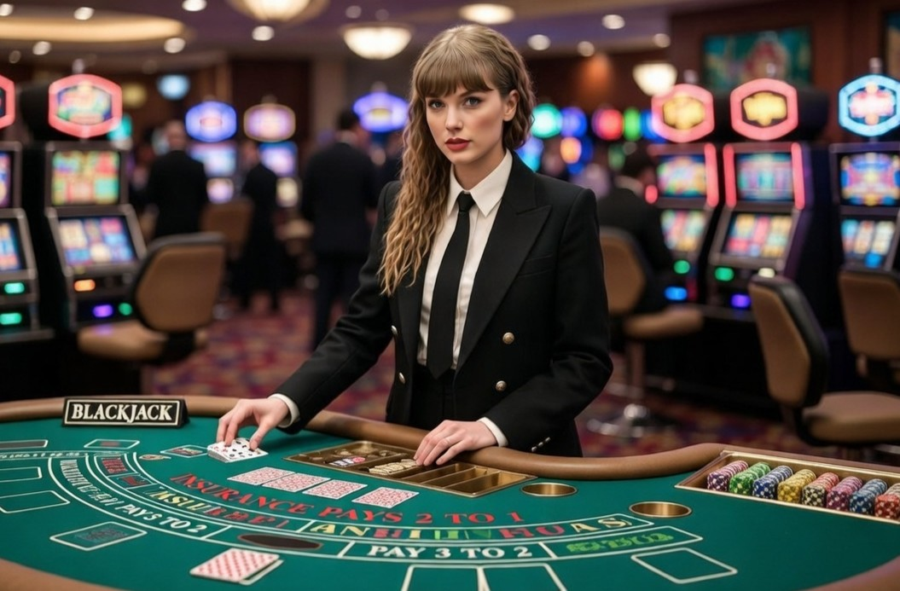
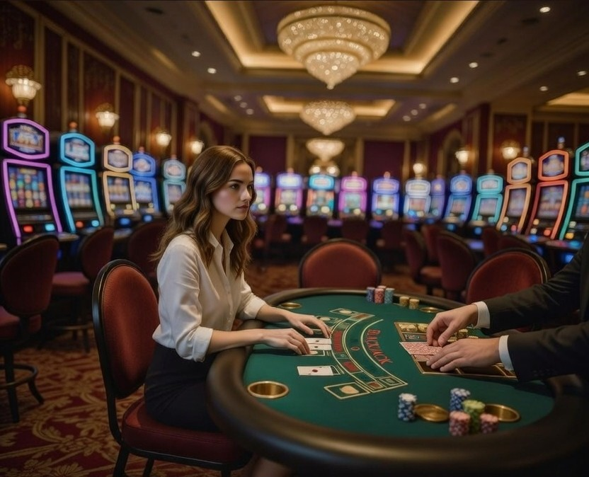
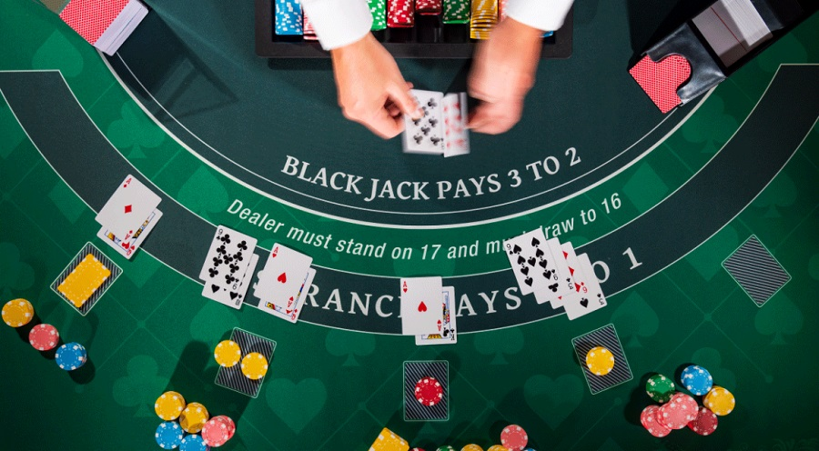
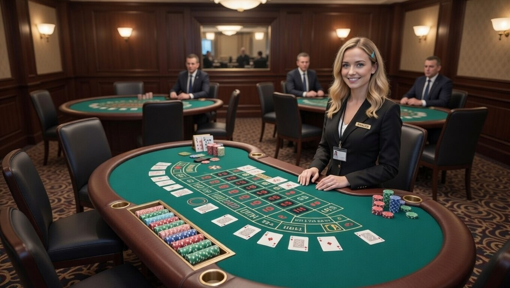
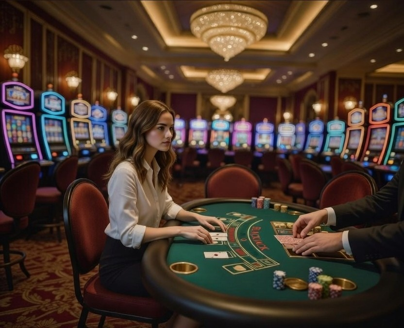
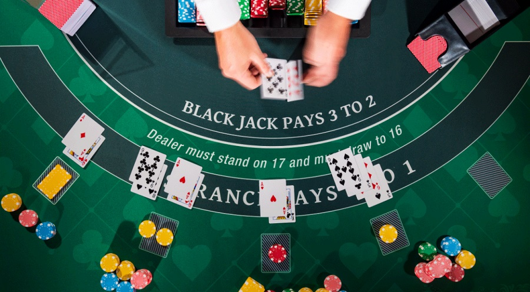
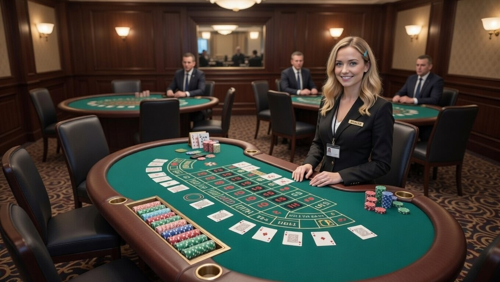

El blackjack es adrenalina contenida, estrategia afilada y un 21 que duele cuando no llega. Cada carta es un riesgo calculado. Cada doble, una declaración de guerra.
¿Te atreves a pedir carta cuando el mundo dice "para"?
Aquí las dudas se rompen. Aquí se viene a ganar grande.
Juega. Multiplica. Conquista.
Como jugar
Objetivo
El objetivo principal es conseguir una mano con valor lo más cercano posible a 21 sin pasarse, y superar la mano del crupier.
Si consigues 21 con tus dos primeras cartas (un As + una carta de valor 10), obtienes un **blackjack** y ganas automáticamente (salvo que el crupier también lo tenga).
Al final de cada mano, el jugador con mejor valor (sin pasarse) gana su apuesta contra la casa.
Reglas básicas
- Cada jugador realiza su apuesta inicial en su zona de la mesa.
- El crupier reparte dos cartas descubiertas a cada jugador y una descubierta para sí mismo (en algunas variantes, la segunda del crupier es tapada).
- Empieza el turno del jugador: puedes pedir carta (hit), plantarte (stand), doblar (double down), dividir si tienes pareja (split).
- Si te pasas de 21 (bust), pierdes automáticamente tu apuesta.
- Una vez que todos los jugadores han terminado su mano, el crupier revela su carta tapada y juega según reglas fijas: pide carta si tiene 16 o menos, se planta con 17 o más.
- Se compara: si tu mano es mejor que la del crupier (sin pasarse), ganas 1:1; blackjack paga 3:2 (o 6:5 en algunas mesas); si empatas, recuperas la apuesta (push).
 

 




